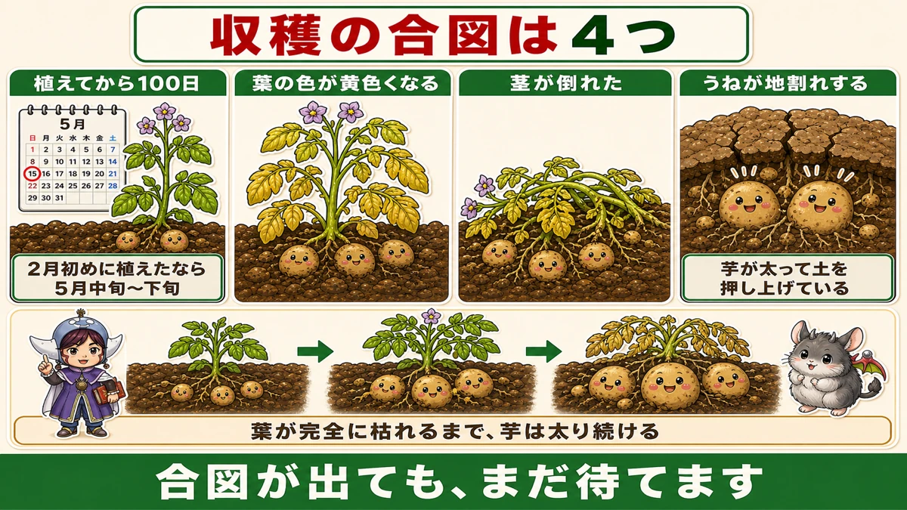
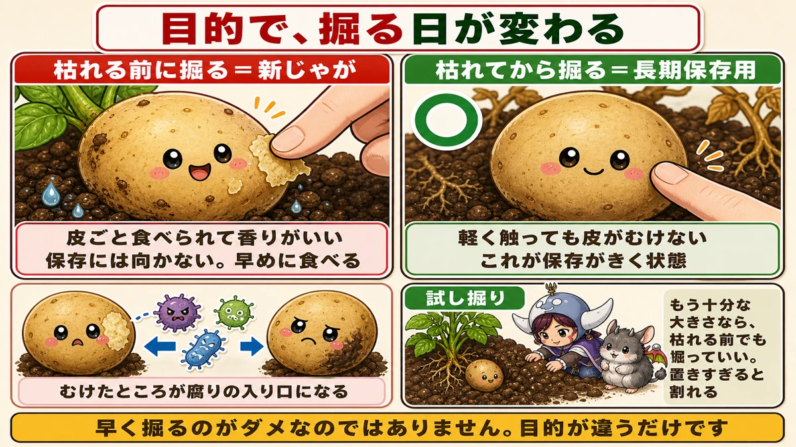
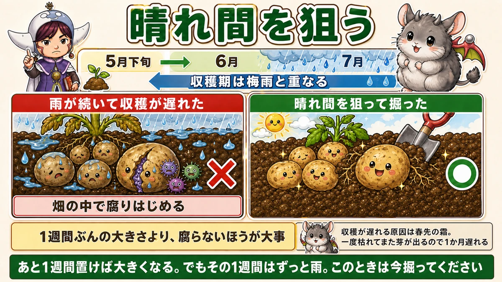
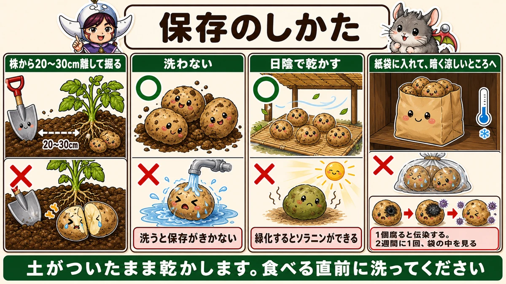

じゃがいもの収穫・保存ガイド｜試し掘りから芽の点検まで
🗨️「いつ掘ればいいのか分からない」
🗨️「掘ったあと、いくつか腐ってしまった」
🗨️「もっと大きくしたくて、待ちすぎた」
どうも、8150（えいこう）です🌱 家庭菜園歴8年、理科の教員免許を持っていて、有機・無農薬で野菜を育てています。
2月に植えたじゃがいもが、そろそろ穫れます。
じゃがいもは、育てるのは簡単なのに、収穫のタイミングだけが難しい野菜です。
先に、この記事でいちばん言いたいことを言っておきます。
枯れる前に掘ると、皮がむけます。そして、そこから腐ります。
だから「いつ掘るか」の答えは、すぐ食べるのか、長く保存するのかで変わります☺️
📖 この記事の目次
この記事で分かること
- 掘る日は『近いうちに食べる分』と『保管しておく分』を分けて考えます。新じゃがを楽しむ早掘りにも、皮が落ち着くまで待つ収穫にも、それぞれの役割があります。
- 植え付けから約100日は、畑を確認し始める目安です。葉の変化に加え、試し掘りで芋の大きさと皮を見ます。
- 春作は梅雨や暑さ、秋作は冷え込みとの兼ね合いで予定を調整します。暦どおりの日より、畑で起きていることを優先します。
- 取り込む前に乾かし、傷みを選り分け、表面の土をやさしく落とします。保管場所は光を避けられ、涼しく、空気が通るところです。
- 保存中も点検は続きます。腐ったものを外し、芽やしおれを確認します。暗い場所でも発芽するので、遮光だけで管理完了にはなりません。
- 葉の黄変、乾燥の場所、秋の土中保存には異なる説明があります。条件を比べて、みなさんの畑で採用できる方法を選びます。
じゃがいもの収穫って、土を掘る作業そのものより「今日やるか、もう少し待つか」で迷うんですよね。地上には葉が見えているのに、肝心の芋は土の中。葉っぱだけを眺めて会議しても、結論が出ないことがあります🥔
そんなときは、全部を一気に収穫する前に、少しだけ土を開いてみてください。大きさが分かれば、今日食べたい分を取るのか、保管用に残すのかを考えやすくなります。『実物を見る』を判断の真ん中に置くと、収穫はずいぶん整理できます。
このページは、収穫前から保存後まで使える確認帳です。掘る日で迷っている方は『作業の手順』へ。すでに袋へ入れた芋が気になる方は『失敗の見分け方』へ進んでください。最初から最後まで覚えなくても大丈夫。必要なところを、その都度開けばOKです。
早見：じゃがいもの収穫と保存（ひと目で分かる数字）
日付を決める前に見る目安
- 植え時：春作と秋作では予定が異なります。この収穫・保存の材料には、地域別の植え付け月を一律に示せる情報がそろっていません。品種の表示と地域の作型を確認し、植えた日を記録しておきます。
- 春作の収穫期：5月下旬〜7月という幅のある説明と、高温や過湿を避けて6月中の収穫を目指す説明があります。地域、品種、その年の気候が違うため、全国共通の締め切りにはしません。
- 秋作の収穫期：11月下旬〜12月ごろという説明があります。寒い地域で同じ日付まで待てるとは限らず、霜の見込みと芋の育ちを併せて判断します。
- 植え付けからの日数：約100日。天候や生育の経過で前後します。100日目に全株を掘る約束ではありません。
- 葉色の目安：黄緑〜黄色への変化。7〜8割ほど色が変わった状態を挙げる説明もありますが、全株に同じ割合を要求する基準ではありません。
- 株間・うね幅：この材料では、収穫や保存のための共通寸法を確定できません。株間の数字を、収穫時の道具の差し込み距離に読み替えないようにします。
- 元肥の時期：植え付け前の準備に属する作業です。収穫間際に大きさが気になってから入れるものとして扱いません。量と種類は、土や前作の条件を含めて別に確認します。
- 追肥の時期：生育途中に行う説明と、元肥や土の蓄積、栽培方法によって不要とする説明があります。この回の材料から一律の回数・量は決められません。
- 取り込み前の乾燥：畑で30分〜1時間、または1時間程度という説明と、風通しのよい日陰で表面が乾くまで待つ説明があります。時間の違いだけでなく、場所と天候が違います。
- 保存前に確認する状態：表面が乾いている、傷みがない、皮をむくような強い土落としをしていない。この確認を済ませてから保管へ移します。
- 保存の温度・湿度：この材料には家庭向けの統一した数値指定がありません。暗さ、涼しさ、通気を確認し、生育中の気温を保存庫の設定温度に使わないようにします。
- 点検の間隔：材料に共通の周期はありません。収穫した日や最近の点検日を残し、傷みや芽が見つかったら中身を確認します。
- 保存できる期間：冬まで持たせる例はありますが、すべての品種に同じ期限を当てはめられません。休眠の長さ、収穫時の皮や傷、保管環境によって変わります。
- 連作の間隔：何年間あけるという数字は、この収穫・保存の材料では確認できません。前作の履歴を残し、収穫時に小芋を拾って、翌年勝手に芽が出る原因を減らします。
早見の数字を、実際の株へ当てはめる
「約100日」と「6月中に収穫」は、同じ種類の情報ではありません。前者は植え付けからの経過、後者は暑さや雨を避けたい栽培計画です。そこへ秋作の11月下旬という話まで混ぜると、何を基準にすればよいか分からなくなります。まず『春か秋か』『いつ植えたか』『どの品種か』をそろえましょう。
例えば、植え付けから約100日で、葉の色が変わり始めた株があるとします。これだけでは「長く置ける芋ができた」とまでは分かりません。土を少し開き、使いたい大きさになっているか、扱うと皮がすぐにはがれるかを確かめます。日数は観察の入口、実物は次の作業を決める材料です。
反対に、予定日を過ぎても葉が緑なら、暦だけを理由に引き抜く必要はありません。品種による進み方や、途中で寒さに当たった経過を振り返ります。ただし、大雨が続く予報や、すでに土が過湿になっている状況を無視して、日数を延ばせばよいという話でもありません。
畑へ持って行くメモは、次の程度で十分です。
- 植えた日と品種が分かる
- 春作か秋作かを分けた
- 葉の変化と、その株の場所を記録した
- 試し掘りで大きさと皮の状態を確認する予定にした
- 掘った芋を乾かす場所を確保した
- 保管場所の暗さと通気を確認した
収穫後の段取りまで先に考えておくのがコツです。掘るほうは順調でも、持ち帰った先に広げる場所がなくて、湿ったまま詰めてしまうと困ります。芋の量に合わせて作業を分ければ、乾燥と選別にも手が回りますよ。
作業の手順（時期の順）
収穫前：食べる予定と保管する量を分ける
- 近いうちに料理へ使う分と、あとへ残したい分を分けます。
- まだ葉が働いている株は、新じゃがとして一部を取る候補にします。早く掘った芋は皮がはがれやすいので、保管用と同じ扱いにしません。
- 保管へ回したい株は、葉の衰えに加えて芋の皮を確認します。葉色だけで貯蔵向きだと決めません。
- 今後の雨、暑さ、秋なら霜の見込みを調べます。畑に残しておく利点と、残すことで増えるリスクを比べます。
最初に用途を決めると、収穫時期の話がすっきりします。少し早めに掘ることも、待つことも、目的に合っていれば選択肢です。「早掘りしたから失敗」と考えなくて大丈夫。その分を長期保存へ回そうとしていないか、そこを確認してください。
新じゃがを楽しむ分と、保存用の分を別の日に掘る計画もできます。ただし、同じ日に植えた株だからといって、同じ大きさ、同じ皮になっているとは限りません。用途の区分を決めたあとも、株ごとの確認は必要です。
収穫前：葉を見て、試し掘りする株を選ぶ
- うね全体を見て、緑の株、色が抜けた株、倒れた株の分布を確認します。
- 急に枯れた株があれば、雨や寒さのあとだったか、周囲も同様かを見ます。自然な生育の終わりと同じ扱いにしません。
- 色が変わってきた株を候補にし、株の近くの土を少しずつ開きます。
- 出てきた芋の大きさと表面を確認します。保管予定なら、触れたときの皮のはがれやすさも見ます。

葉の色、茎の倒れ、うねのひびは、土の中を確認するきっかけになります。ひびがあっても、それだけで大きな芋の位置やサイズまで言い当てられるわけではありません。「ここを見てみよう」と使えば十分です。
試し掘りは、株全体を抜くことだけを指しません。一部の土を開いて、見つかった芋を見る方法もあります。株を抜いてしまうと、残した芋を育て続けることはできません。観察だけのつもりなら、いきなり茎を引っ張らず、土を開くところから始めましょう。
収穫前：試し掘りの結果で、残すか取るか決める
- 使いたい大きさに育っていたら、その芋を取るか、株の収穫へ進むかを選びます。
- 小さく、葉も健全に緑なら、そのまま残す選択肢があります。
- 残す芋には土を戻し、露出したままにしないようにします。
- すでに大きな芋がある株は、さらに待つと割れる可能性も含めて考えます。大きさだけをねらって待ち続けません。
- 別の品種や育ちの違う場所は、別に確認します。最初に見た一個をうね全体の代表にしすぎないことが大切です。

『大きいものを先に取り、小さいものを残す』という収穫も材料にあります。この場合も、残す芋に土を戻すところまでが作業です。大きな芋が見つかったうれしさで、土を開いたまま帰らないようにしてくださいね。
保管したいのに皮がはがれやすい場合は、条件が許せば成熟を待つ考え方があります。ただ、雨が続く見込みなら、畑での腐りを避ける判断も必要です。早く取らざるを得なかった芋を、予定どおり長期保管へ回すのではなく、食べる順番のほうを調整します。
収穫日：空模様と土の湿りを別々に確認する
- 天気予報で、作業中の雨だけでなく、その後に乾かせる見込みも確認します。
- 畑の土を見ます。晴れていても、前の雨で土が湿っていれば、乾いた日の収穫と同じ条件ではありません。
- 土が乾いて作業しやすい日を選べるなら、そこへ収穫を合わせます。
- 雨続きの前に収穫する場合は、持ち帰ったあとに広げて乾かす場所を用意してから掘ります。
- 一度に掘る量を、乾燥と選別を進められる範囲に調整します。

天気のアプリに晴れマークが出たら、つい安心しますよね。でも、空は晴れでも土は昨日のまま、ということがあります。保存を考えるなら、芋についてくる土が湿っているかまで見てください。
『もう少し太らせたい』『皮を落ち着かせたい』『雨の前に終えたい』は、同時にかなわないこともあります。そのときは、芋の現在の大きさ、畑の水はけ、乾燥できる場所、使い切れる量を並べます。どれか一つの目安だけで答えを出すより、収穫後まで見通せます。
収穫日：芋の位置を探りながら掘り進める
- 土を少しずつ開き、どこに芋ができているかを確認します。
- 浅い位置にある芋は、手で土をよけながら取り出します。
- 道具が必要な場合も、芋のある位置へ刃を勢いよく入れないようにします。株からの距離を一律の数字で決めず、実際の広がりを見ます。
- 取り出した芋を乱暴に投げたり、こすり合わせたりせずに置きます。
- 株についてこなかった芋がないか、開いた土の中をもう一度探します。
浅植えで手掘りがしやすい例もありますが、すべての畑で同じ深さに芋ができるわけではありません。植え方が違えば、掘る動作も変わります。手で軽く土をよける方法が使えないからといって、育て方に失敗したわけではありません。
収穫時につけた傷は、その場で分けておきます。掘り進めながら全部を同じ容器へ入れると、あとで傷のあるものを探し直すことになります。保管向きの芋と、早く使う候補を先に分ければ、乾燥後の判断も楽になります。
収穫後：まず広げ、乾いた状態を確かめる
- 掘った芋を、風が通る日陰へ広げます。濡れたまま、すぐに保存の袋へ詰めないようにします。
- 表面の土や芋の湿りを確認し、乾燥が進むのを待ちます。
- 畑で短時間乾かす方法を選ぶ場合も、その場を離れて長時間の日光に当て続けないようにします。
- 雨で畑の乾燥が難しいときは、持ち帰って広げる方法へ切り替えます。
- 時間が経ったことだけを根拠に取り込まず、表面が乾いたかを見て次へ進みます。
短い天日乾燥と日陰乾燥の両方が説明されているため、ここでは管理しやすい日陰を出発点にしています。詳しい違いは、後ろの『説明が分かれていること』で整理します。半日たてば終わり、という固定の時間割にはしません。
収穫が多いと、乾燥場所にも余裕が必要です。次々掘る前に、先に取った分を広げられているかを確認してください。積み重ねてしまい、中が湿ったままになるようなら、収穫の進め方を分けるほうが扱いやすくなります。
収穫後：皮を傷めずに土を落とし、選別する
- 乾いて落ちやすくなった表面の土を、軽く落とします。
- 芽のくぼみも確認します。土を落としたいあまりに、皮まで強くこすり取らないようにします。
- 傷や皮むけのあるものを、長く置く予定の芋から分けます。
- 腐りや緑化などの異常がないか調べます。疑わしい芋を、保存袋の奥へ紛れ込ませないようにします。
- 食用にしない小芋と、葉や茎の残りを畑から回収します。
土落としの目的は、売り場のような見た目にすることではありません。乾いた土を軽く外し、状態を見られるようにする作業です。ここで皮を傷めると、保管へ回せる芋を減らしてしまいます。
小芋を拾うのは、片づけだけの話でもありません。土中に残った芋から翌年芽が出ることがあるためです。次に別の野菜を植えた場所へじゃがいもの芽が出ると、作付けの管理がややこしくなります。収穫の最後にもう一度探す時間を取ってください。
保存開始：容器と置き場所を組み合わせる
- 乾燥と選別が済んでから、保存する容器へ移します。
- 容器だけで判断せず、光が入りにくいか、空気が通るか、中身を確認しやすいかを見ます。
- 涼しく、光を避けられ、通気のある場所を選びます。
- 収穫日、品種、早掘りか成熟を待ったものかを残します。
- 食用の保存分と、次に植えるための芋は、置き分けて取り違えを防ぎます。

容器の名前がよさそうでも、置き場所が明るければ遮光の課題が残ります。逆に暗い場所でも、湿りや暑さがこもるなら、それだけで適しているとは言えません。家の中の特定の場所を一律におすすめせず、実際の条件を見て選びます。
保存中：点検して、食べる順番を変える
- 中身を確認し、腐りや異常があるものを外します。
- 隣の芋にも変化がないか見ます。問題の一個だけ抜いて、残りを見ずに終えないようにします。
- 芽、しおれ、表面の色の変化を確認します。
- 皮が薄い早掘りの芋や、長く保管しにくい状態の芋は、食用として問題がないか確認したうえで先に使う候補にします。
- 変化が続くなら、容器の中だけでなく、置き場所の湿り、温度の変化、光の入り方も見直します。
保存は、収穫のあとに続く管理です。袋へ入れたらおしまい、にはなりません。たくさん取れたときほど、残りの量と最近見た状態を記録すると、食べる順番を考えやすくなります。
失敗の見分け方（症状→原因→やること）
葉が黄色くなったのに、掘るべきか決められない
- 症状：株の葉色が抜け始めていますが、全部を取ってよいか迷います。
- 考えられる原因：自然な生育の終わりが近づいている場合があります。一方で、過湿や病気などによる枯れ込みもあり、色だけで成熟を確定できません。
- やること：変化がゆっくり進んだか、急だったかを確認し、試し掘りで芋の大きさと状態を見ます。食べる用途と天候を併せて、対象の株から収穫を判断します。
うね全体が少しずつ色を変えている場合と、雨のあとに一部だけ急に枯れた場合では、確認したいことが違います。どちらも黄色、で一緒にすると、病気の可能性を見落とします。葉の写真や前回の観察日があれば、変化の速さを比べてください。
予定の日を過ぎても、葉が緑のまま
- 症状：植えて約100日が近づいた、あるいは過ぎたのに、まだ葉が茂っています。
- 考えられる原因：品種や天候による進み方の違い、寒さで一度生育が止まった経過、肥料の残りなど、複数の条件が考えられます。
- やること：植えた日と品種を確かめ、試し掘りします。小さく健全なら待つ選択、大きければ一部を取る選択を検討します。遅れを一律に霜のせいにしません。
まだ緑だからといって、土の中も必ず小さいわけではありません。前作の肥料が残る畑などでは、見た目より芋が育っていることがあります。追加の肥料を入れる前に、まず中身を見る。その順番のほうが、余計な作業を増やさずに済みます。
試し掘りした芋が、思ったより小さい
- 症状：葉の色は変わってきたのに、見つかった芋が小さめです。
- 考えられる原因：まだ肥大の途中、株ごとの生育差、過湿や寒さなどによる生育の停滞が候補になります。
- やること：別の芋や株も確認し、葉が健全かを見ます。残して育てるなら土を戻し、雨や暑さの見込みを確認します。小さいという理由だけで、収穫直前に追肥を増やしません。
小さな一個が出てくると「全部これなんかな」と思いやすいですが、株の中にも大きさの違いがあります。最初の一個で全体を決めないことが大切です。反対に、葉がすでに傷んでいる株を長く残しても、同じように大きくなると期待はできません。
触ると皮がはがれる
- 症状：掘り上げた芋の皮が、軽い扱いでもこすれてはがれます。
- 考えられる原因：早掘りで皮が落ち着いていない場合や、取り出すとき・土を落とすときの摩擦が考えられます。
- やること：土落としをやさしくし、皮むけの芋を保管向きのものから分けます。傷みの有無を確認して、先に使う候補へ回します。
皮がはがれたら即座に全部腐る、という意味ではありません。ただ、長く置く予定なら不利な状態です。無傷の芋と同じ袋へ戻して忘れてしまわず、状態を見られるように分けておくと、あとで使う順番を決めやすくなります。
大きな芋に割れがある
- 症状：大きく育った芋に、表面から見える裂け目があります。
- 考えられる原因：すでに大きい芋を長く待ったことや、雨の多い時期に収穫が遅れたことが関係する場合があります。外見だけで原因を一つに絞れません。
- やること：割れた芋を選別し、腐りなどの異常がないか見ます。残りの株も試し掘りし、まだ大きくするために待つ必要があるかを考え直します。
割れが見つかったときは、次の年へ向けて『どの株か』『いつ掘ったか』『直前に雨が続いたか』を残しておくと役立ちます。雨だけで説明を終えず、掘る前から十分な大きさだった可能性も確認してください。
保存した芋の一部が腐った
- 症状：保管中に、傷んだ芋が見つかります。
- 考えられる原因：収穫時からの傷み、皮の傷、乾燥不足、保管環境などが候補です。袋へ入れたときには目立たなかった異常も考えられます。
- やること：傷んだ芋を外し、接していた芋を含めて中身を確認します。表面の湿りや置き場所も見直し、同じ状態のものを詰め直すだけで終えないようにします。
原因探しは『掘った時点』『乾かして取り込むまで』『保存を始めてから』に分けると進めやすいです。掘る時点で腐っていたなら畑の条件も確認。掘ったときは問題がなく、取り込み後に傷みが増えたなら、乾燥や選別の工程を振り返ります。
暗いところなのに芽が伸びた
- 症状：光を避けて置いた芋から芽が出ています。
- 考えられる原因：休眠が終わったこと、品種による休眠の違い、保管環境が関係します。暗所での発芽は起こり得ます。
- やること：食用の分と種用の分を分けて確認し、芽と芋全体の状態を見ます。暗い場所へ移すだけで発芽が止まるとは考えず、残りをどう使うか見直します。
ここで「遮光が足りなかった」と決めつけると、管理の見直しがずれてしまいます。遮光は緑化を防ぐために続けます。そのうえで、芽が出始めたという別の変化に対応してください。
保存している芋が、しおれてやわらかくなった
- 症状：以前より張りがなく、芽も伸びていることがあります。
- 考えられる原因：発芽後に芋の蓄えが使われ、品質が落ちてきた可能性があります。ただし、やわらかい外見だけで腐りとの区別や食用可否を確定できません。
- やること：芽だけに注目せず、色、傷み、腐りの有無を調べます。長く置く計画を続けず、食用として扱えるかを確認して使う順番を考え直します。
芽を外したら収穫直後へ戻る、という話ではありません。すでに変化した芋の状態は、そのまま確認する必要があります。収穫日や品種を残しておけば、次の栽培で保存に向く品種を選ぶときの材料にもなります。
芋の一部が緑っぽい
- 症状：露出した側などに緑色の変化があります。
- 考えられる原因：栽培中の露出や、収穫後・保管中に光が当たったことが候補です。
- やること：食用の芋と分け、ほかの芋や置き場所も確認します。緑化したものを、加熱すれば問題ないと判断して料理へ混ぜないでください。
芽や緑色の部分、未熟な芋には天然毒素への注意が必要です。加熱で確実に減るとは期待できません。食用の判断は、後ろのFAQにある農林水産省の案内も確認してください。ここで独自の切り取り幅や可食量は設定しません。
説明が分かれていること
黄色くなったら掘るのか、枯れが進むまで待つのか
- Aという説明：黄変を収穫適期とし、病害虫や腐りのリスクを増やさないよう、適期を迎えた株を早めに収穫します。
- Bという説明：長く保存したい場合は、葉や茎の枯れが進むまで待ち、収穫時に皮がはがれにくい状態を目指します。
- どう考えればよいか：畑に長く残すリスクと、皮の成熟を待つ利点を比較します。新じゃがとして使う分か、保管する分かでも優先順位が変わります。
両方とも葉色を見ていますが、答えを出すときに重視していることが違います。『早く掘る説明が正しいから、保存用も全部すぐ掘る』と一本化すると、皮の状態を見る視点がなくなります。逆に『待つ説明が正しいから、雨が続いても全部残す』とすると、畑のリスクが抜けます。
保存目的でも、すべての葉が完全に枯れることを唯一の合格条件にしません。材料には、ある程度枯れた状態を挙げる説明もあります。待つかどうかを葉の割合だけで決めず、試し掘りした芋の皮と、その後の天候を併せて見ます。
春じゃがは6月中なのか、7月までなのか
- Aという説明：暑さと過湿を避けるため、早めの準備から6月中の収穫を目指します。
- Bという説明：地域や品種による幅を含めて、5月下旬〜7月を収穫の範囲として考えます。
- どう考えればよいか：月の数字だけを切り出さず、地域の高温、梅雨、植え付け時期とセットで読みます。手元の株の状態を見ずに全国一律の期限にしません。
6月中という計画は、これから植える段階で逆算する情報としても役立ちます。すでに遅れている株を見て、期限に間に合わせるために未確認のまま全部抜く指示とは違います。今年の収穫では実物を見て判断し、その記録を次の年の計画へ返しましょう。
短い天日乾燥か、日陰での乾燥か
- Aという説明：取り込み前に、畑で30分〜1時間ほど天日に当て、ついた土を乾かします。畑で1時間程度という説明もあります。
- Bという説明：風通しのよい日陰へ広げ、表面が乾いてから土を落として保存に移します。
- どう考えればよいか：短い取り込み前の処理と、保存前の乾燥場所を分けて読みます。天日に当てる説明を、長時間放置してよいという意味に広げません。
この違いは『30分か1時間か』だけではありません。土の湿り、天気、そのあとどこへ置くかも違います。同じ時間でも、乾いた土の芋と、雨のあとで土が湿った芋の乾き方を同一にはできません。
家庭で進めるなら、途中で様子を見られる日陰に広げる方法から考えると段取りを組みやすいです。時間を延ばせば延ばすほどよい、という管理にはせず、表面の乾きと光の当たり方を確認します。
収穫後すぐ食べるか、しばらく置くか
- Aという説明：皮の薄い新じゃがは、早めに使って持ち味を楽しみます。
- Bという説明：秋の収穫芋を約1か月置いてから出す、味を重視した扱い方があります。
- どう考えればよいか：約1か月は、個別の扱い方の例です。傷のある芋や乾燥不足の芋も含め、全品種を同じ期間寝かせる指示にはしません。
味のために置く話と、保存できる状態かを確認する話は別です。「置くとおいしくなる」という言葉だけで早掘りの芋を残すと、皮の薄さや傷みを見落とします。まず保存に回せる状態を選び、そのうえで食べ方を考えます。
秋作は霜より前に取るか、土中へ残すか
- Aという説明：霜で地上部が傷む前に収穫します。秋は寒さで生育が終わることを見込んで進めます。
- Bという説明：試し掘りで十分な大きさを確認した秋作について、防寒を終えて地上部が枯れたあと、土をかけて畑で保存する例があります。
- どう考えればよいか：Bは条件のある栽培例で、全国どこでもできる保管方法ではありません。春の梅雨時に畑へ残す根拠としては使いません。
土中保存の例には、寒さに応じてかける土の量を変える説明があります。しかし、何cmかければどの地域でもよいという数値は示されていません。『3月まで保存』という結果だけを取り入れて、土の状態や寒さを省くことはできません。
初めて収穫・保存を組み立てるときは、掘って状態を確認し、管理できる場所へ取り込む方法から考えましょう。土中保存を選ぶなら、その畑で条件が合うことを別に確かめる必要があります。
栽培途中の追肥は必要か、不要か
- Aという説明：粒を大きくする管理として、芽かきや追肥を組み合わせます。
- Bという説明：元肥や前作の肥料、土の蓄積、栽培方法によっては、追肥をしない方法もあります。
- どう考えればよいか：回数だけで比べず、最初の条件を確認します。収穫が近い株の小ささを、追加施肥だけで解決しようとしません。
葉を育てる段階の話と、収穫目前の話を混ぜないことが大切です。すでに葉が衰えている株に、育ち始めの管理を持ち込んでも、同じ意味にはなりません。今回小さかった株については、水はけや生育の経過も記録し、次の栽培の準備から見直します。
秋の浅植えか、深植えか
- Aという説明：浅く植える方法では収穫が楽になり、表面に近い芋を取り出しやすくなります。
- Bという説明：秋は地表の暑さが問題になるため、深めに植える方法が安全だとする説明があります。
- どう考えればよいか：掘りやすさと、暑い植え付け時期を乗り切れるかは別の評価です。収穫時の便利さだけで次の秋作の植え方を決めません。
今回の材料から、地域や土に関係なく片方を採用することはできません。浅植えの収穫実演を見たからといって、自分の畑も手だけで同じように掘れると予想しないこと。植え方を記録しておくと、収穫時の芋の位置も理解しやすくなります。
よくある質問
植えて100日になれば、必ず収穫できますか
約100日は観察を始める目安です。品種、天候、生育の経過で前後します。
葉色を確認し、一部の芋を見てから判断してください。日付だけで全株を収穫しなくても大丈夫です。
花が咲いたら、掘ってもいいですか
この材料では、開花だけを収穫の基準にする根拠を確認できません。
花の有無に答えを任せず、植えてからの経過、葉の変化、試し掘りを使って判断します。
葉が緑なら、まだ収穫してはいけませんか
近いうちに食べる新じゃがとして、早めに取る選択肢があります。まず大きさを確認してください。
皮がはがれやすい芋を、成熟を待った保管用と同じ予定で置かないことがポイントです。
試し掘りでは、株を抜かなければいけませんか
一部の土を開き、芋の大きさを見る方法があります。すべてを抜く必要はありません。
残して育てたい芋があれば、土を戻して露出を防ぎます。株を抜く前に、観察なのか全収穫なのかを決めましょう。
同じ日に植えた株は、まとめて掘れますか
品種や株の状態によって、育ち方に差があります。
先に枯れが進んだ株から確認するなど、対象を分けられます。最初に掘った株だけで、うね全体の状態を決めないようにしてください。
昨日雨が降りました。今日は晴れなら大丈夫ですか
空の状態に加え、土の湿りを確認します。晴れた直後でも、畑が乾いているとは限りません。
収穫を前倒しする必要があるときは、持ち帰って乾かす段取りを先に用意します。
日陰では、何時間乾かせばよいですか
日陰乾燥の時間を一律に決められる材料はありません。
経過した時間より、表面とついた土の乾きを見ます。湿ったまま取り込むことと、長い日光に当てることの両方を避ける段取りにします。
土は全部残したほうが保存に向きますか
材料には、乾燥後に土を落とし、芽のくぼみに残った土も確認する手順があります。
『土は一切落とさない』と固定せず、乾いて外れる土をやさしく落とします。見た目を整えるために皮までこすらないようにしましょう。
水洗いすると、必ず保存できなくなりますか
今回の材料だけでは、そう言い切る直接の根拠を確認できません。
この記事の保存手順は、乾燥して土を軽く落とす方法です。湿りを残したまま袋へ詰めないことを、まず確認してください。
暗いところに置けば、芽は出ませんか
暗所でも発芽します。芽が出ない期間である休眠が終わることや、品種の違いも関係します。
光を避ける管理は続けつつ、芽や芋の変化を見る点検も行います。
保存中の芽を取れば、ずっと置けますか
芽を外す管理の例はありますが、保存期間が無期限になる方法ではありません。
芋全体のしおれや傷みも確認します。芽がなくなったことを、そのまま食用の安全保証にしないでください。
緑の部分は、煮れば食べられますか
加熱によって天然毒素が確実に減るとは期待できません。芽や緑色の部分を十分除く必要があります。
処理に迷うものを無理に料理へ回さず、農林水産省の案内を確認してください。
小さい芋は、全部食べられないのでしょうか
大きさだけでは未熟かどうかを決められません。成熟しても小さい品種があります。
一方、家庭菜園の未熟な芋には天然毒素への注意が必要です。小さいから新じゃが、という区分でまとめないようにします。
食用の注意点の確認先：[農林水産省「じゃがいもによる食中毒を予防するために」](https://www.maff.go.jp/j/syouan/seisaku/foodpoisoning/naturaltoxin/potato.html)、[「ソラニンやチャコニンによる食中毒を防ぐには」](https://www.maff.go.jp/j/syouan/seisaku/solanine/yobou/yobou.html)。
スコップで切った芋も、保存袋へ入れてよいですか
長く置く分からは分けます。切り傷のある芋を、無傷の芋と同じ予定で保管しません。
早く使う候補にする場合も、腐りや緑化など別の異常がないか確認します。傷があるものは何でも食べられる、という意味ではありません。
プランターでも、約100日で判断できますか
日数はあくまで目安として使います。容器栽培だから日付だけで確定できるわけではありません。
葉の状態と芋を確認し、特に水はけや過湿の経過を振り返ります。地植えと同じ乾き方だと決めつけないことが大切です。
春に取った芋を、次の春の種芋にできますか
一年保存については、この材料で確かな方法や保証を示せません。
春から秋へ、秋から春へつなぐ話とは分けて考えます。食用の保管と種芋の準備も、目的の違う管理です。
学ぶ：じゃがいもの皮・葉・休眠のしくみ🔬
葉の変化と、芋の大きさを分けて見る理由
じゃがいもの葉は、光を使って芋を育てるための養分を作ります。緑の葉が健全に働いている間は、土の中の芋が大きくなる余地があります。葉が衰える様子を見るのは、その働きが終わりへ向かう時期を知るためです。
ただし、葉の色が変わった理由は一つではありません。自然な生育の終わり、病気、過湿、霜による傷みは、それぞれ違う経過です。結果として黄色や枯れた姿が見えても、土の中で同じ状態の芋ができているとは限りません。
ここで実物の観察が効いてきます。葉が緑でも十分大きい芋があることがあり、葉が傷んでいても芋は小さいままのことがあります。地上の葉は生育の経過、土中の芋は現在の収穫物。役割の違う情報を組み合わせると、判断の偏りが減ります。
肥料を足す話も、この関係から考えます。芋の大きさが気になったとき、葉が働ける状態かを見ずに肥料の量だけを増やしても、原因の確認になりません。土の条件や前作の肥料も違うため、追肥の必要性は生育の経過とセットで考える必要があります。
皮の状態は、収穫後の扱いやすさに関わる
早く取った芋では、皮が擦れてはがれやすいことがあります。葉や茎の枯れが進んだあとに取った芋は、触っても皮が簡単にははがれない状態になる例があります。この違いが、収穫時の扱いと保管の計画に関わります。
皮をむけるか試すために、強くこする必要はありません。土を開き、取り出して、やさしく扱う中で表面を見ればよいのです。確認のために傷を増やすのは、ちょっと本末転倒ですよね。
皮の状態を見るときは、大きさとは分けて考えます。大きくなっているから丈夫な皮とは限らず、小さいからすべて未熟とも言えません。『使いたいサイズか』『皮はどんな状態か』『異常はないか』を別々に見ると、早く使う分と残す分の区分がしやすくなります。
皮がはがれたり傷がついたりした芋には、腐りのリスクがあります。ここで大切なのは、必ず腐ると決めつけることより、無傷の芋と扱いを分けることです。乾燥や保存の工程で異常がないか確認し、長く置く予定を変更します。
乾燥、土落とし、遮光は別の役割を持つ
保存の手順は似た作業が続きますが、確認していることは違います。乾燥は取り込む前の湿りを見る工程。土落としは、乾いて外れる土を落とし、表面や芽のくぼみを確認する工程。遮光は、保管中に光が当たり続けるのを避ける管理です。
例えば、日陰へ運んでも湿りが残っていれば、乾燥が済んだことにはなりません。土を落として見た目がきれいでも、明るい場所へ置けば、遮光の管理はできていません。どれか一つをやったことで、残りの工程を省けるわけではないんです。
この三つを分けると、保存後に問題が出たときも振り返りやすくなります。湿ったまま取り込んだのか、皮をこすりすぎたのか、置き場所で光が当たったのか。『保存に失敗した』の一言で終えず、どの工程を変えるかまで考えられます。
雨の多い時期の割れや腐りも、同じように場面を分けて見ます。畑にある間の変化と、掘ってからの変化は別です。雨との関連があるからといって、割れが起こる内部の仕組みを、確認していない細かい因果で説明しきる必要はありません。観察できた条件を残すほうが、次の対策につながります。
暗い場所でも芽が出るのは、休眠があるから
収穫した芋には、すぐには芽が出ない期間があります。これを休眠と呼びます。品種によって休眠の長さが違い、その期間が終わると、暗い場所でも発芽することがあります。
『光を避ける』と『発芽しない』を同じ意味にしないでください。遮光している芋から芽が出たからといって、遮光する管理が無意味になるわけではありません。光への対策を続けながら、別の変化である発芽を点検する必要があります。
芽が伸び続けると、芋の蓄えが使われ、やわらかくなったり、品質が落ちたりすることがあります。芽だけを見ていると、芋本体の変化を見逃します。点検では、発芽、しおれ、腐り、表面の変化を一緒に見てください。
保存期間を長く取りたいなら、次の栽培では休眠の長さや貯蔵性も品種選びの材料になります。同じ量を一度に取ることだけでなく、早く使う品種と保管する品種を分ける計画も考えられます。収穫後に困ったことを、来年の品種選びへつなげる感じです。
食用の保存と、種芋の準備は目標が違う
食べる芋は、品質の変化を抑えながら使える状態を保ちたいものです。一方、種芋の準備では、植えるときに芽が育つことを目指します。同じじゃがいもを扱っていても、管理の目標が違います。
種用の芽出しで光を扱う説明があっても、それを食用の保存へそのまま持ち込めません。反対に、食用の芋で芽を抑えたいからといって、次に植える芋にも同じ計画を当てはめると、必要な準備が抜けます。
容器や記録を分けて、『いつ食べるための芋か』『いつ植えるための芋か』をはっきりさせておきましょう。知識を増やす前に目的を分けるだけでも、かなり整理できます。ここ、地味やけど効くところです☺️
まとめ
じゃがいもの収穫は、用途を決め、葉と芋を確認し、天候に合わせて進める作業です。約100日を目安にしながらも、最後の判断は畑の実物で行います。
- 近いうちに使う分は、早掘りの持ち味を楽しむ選択肢があります。皮が薄いものを、長期保管へ無理に回さないようにします。
- 保管したい分は、葉の衰えと皮の状態を確認します。待つ利点だけでなく、雨や暑さのリスクも比べます。
- 試し掘りでは、一部を見てから全収穫へ進めます。残す芋には土を戻し、露出を防ぎます。
- 収穫後は、乾燥、やさしい土落とし、選別を済ませてから保管します。湿ったまま詰めない段取りを作ります。
- 置き場所は、暗さ、涼しさ、通気を組み合わせて確認します。特定の容器や家の場所だけで適否を決めません。
- 保管後も、腐り、芽、しおれ、表面の変化を点検します。暗所でも芽は出るので、残りの芋を見ながら食べる計画を調整します。
次に畑へ行ったら、まずは収穫候補の株を選んで、少し土を開いてみてください。取れた芋の大きさと皮を見たら、天気予報を確認し、乾かす場所まで決めます。全部を一気に終わらせなくても大丈夫。その株の状態が分かれば、次の作業を選べますよ🥔
米袋（紙）
じゃがいもの保存は、光を通さず、湿気もこもらないもの。紙の米袋がちょうどいい。
![[商品価格に関しましては、リンクが作成された時点と現時点で情報が変更されている場合がございます。]](https://hbb.afl.rakuten.co.jp/hgb/56bc3119.f1f4196c.56bc311a.c9ac6e4e/?me_id=1215024&item_id=10001843&pc=https%3A%2F%2Fthumbnail.image.rakuten.co.jp%2F%400_mall%2Fkminori%2Fcabinet%2Fhozai%2Fimg57520728.jpg%3F_ex%3D240x240&s=240x240&t=picttext "[商品価格に関しましては、リンクが作成された時点と現時点で情報が変更されている場合がございます。]")

収穫メッシュバッグ
掘ったその場で入れて、風を通したまま運べます。

乾燥剤
保存箱に一緒に入れておくと、梅雨のあいだの腐りを減らせます。
![[商品価格に関しましては、リンクが作成された時点と現時点で情報が変更されている場合がございます。]](https://hbb.afl.rakuten.co.jp/hgb/56eb9618.3f325504.56eb9619.e861bcb7/?me_id=1358935&item_id=10000079&pc=https%3A%2F%2Fthumbnail.image.rakuten.co.jp%2F%400_mall%2Fhw-enable%2Fcabinet%2Fsilicagel%2Ffujigel%2F10gn.jpg%3F_ex%3D240x240&s=240x240&t=picttext "[商品価格に関しましては、リンクが作成された時点と現時点で情報が変更されている場合がございます。]")
じゃがいもシリカ
切り口を保護する資材です。次の作付けで種芋を切るときに。
![[商品価格に関しましては、リンクが作成された時点と現時点で情報が変更されている場合がございます。]](https://hbb.afl.rakuten.co.jp/hgb/565b74ce.f30a48e7.565b74cf.8a827250/?me_id=1368676&item_id=10000491&pc=https%3A%2F%2Fthumbnail.image.rakuten.co.jp%2F%400_mall%2Farakawaseed%2Fcabinet%2Fcompass1582111506.jpg%3F_ex%3D240x240&s=240x240&t=picttext "[商品価格に関しましては、リンクが作成された時点と現時点で情報が変更されている場合がございます。]")